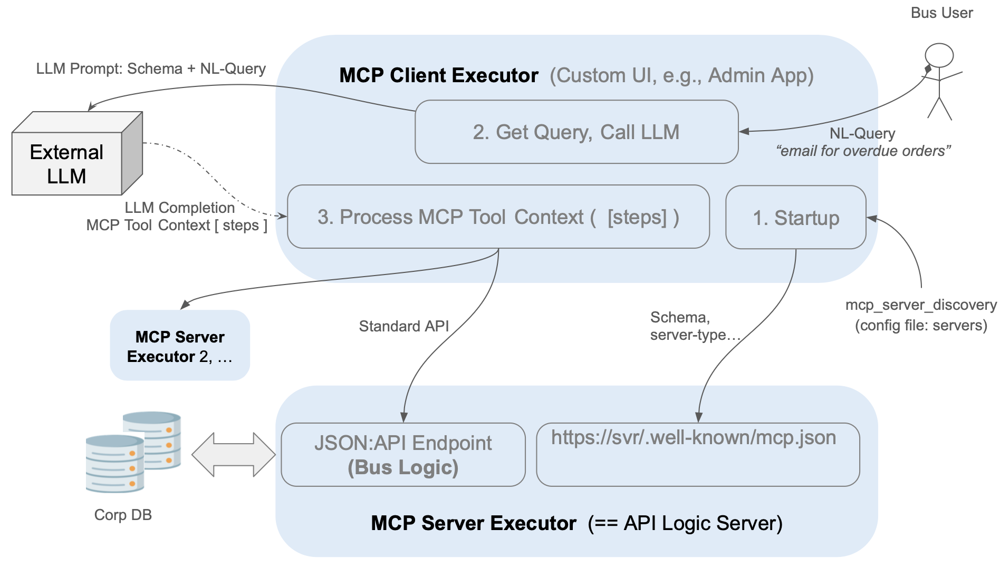
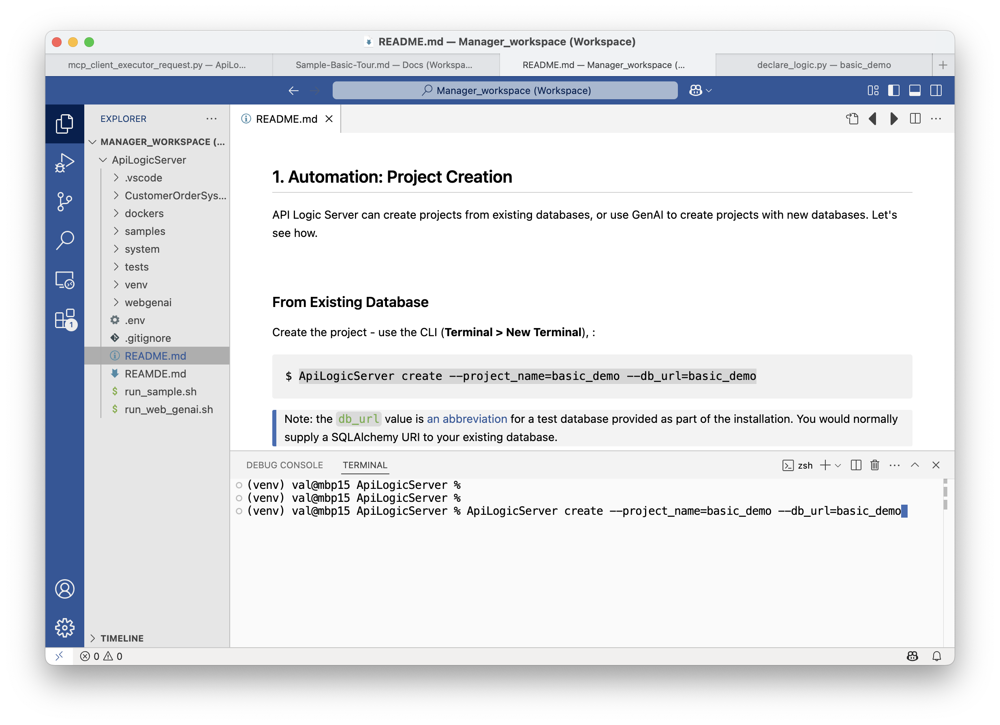
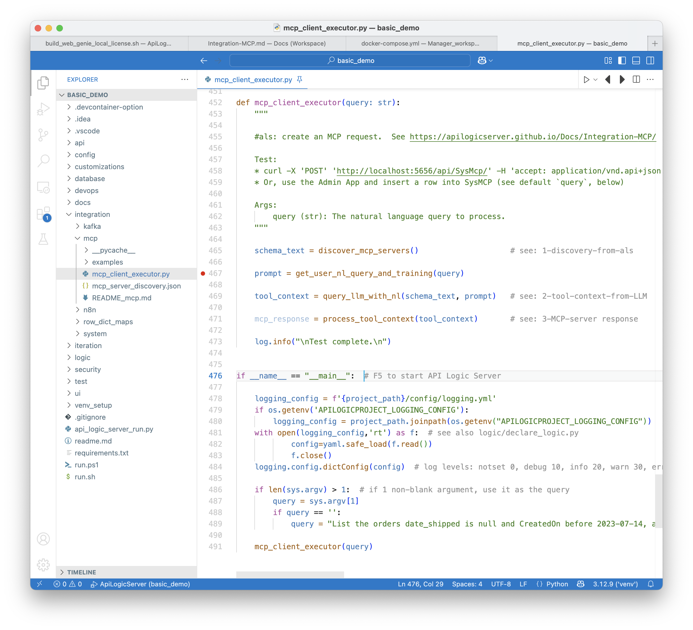
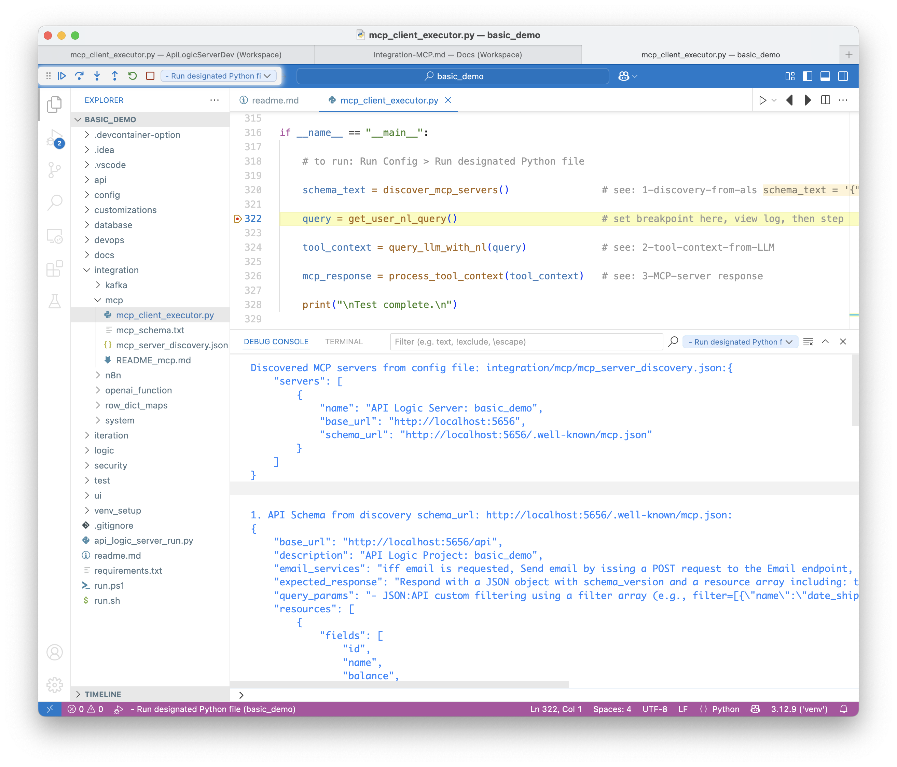
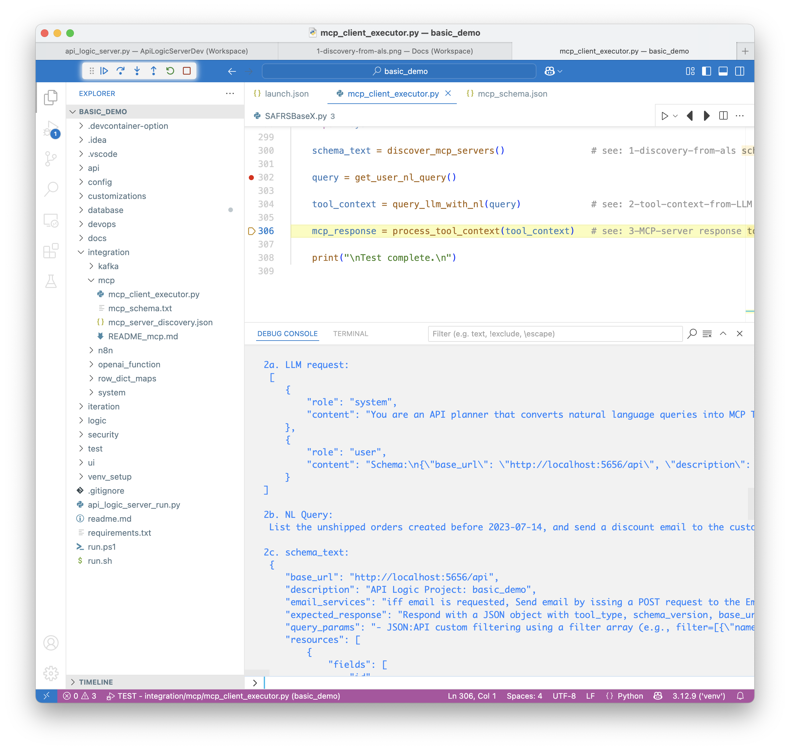
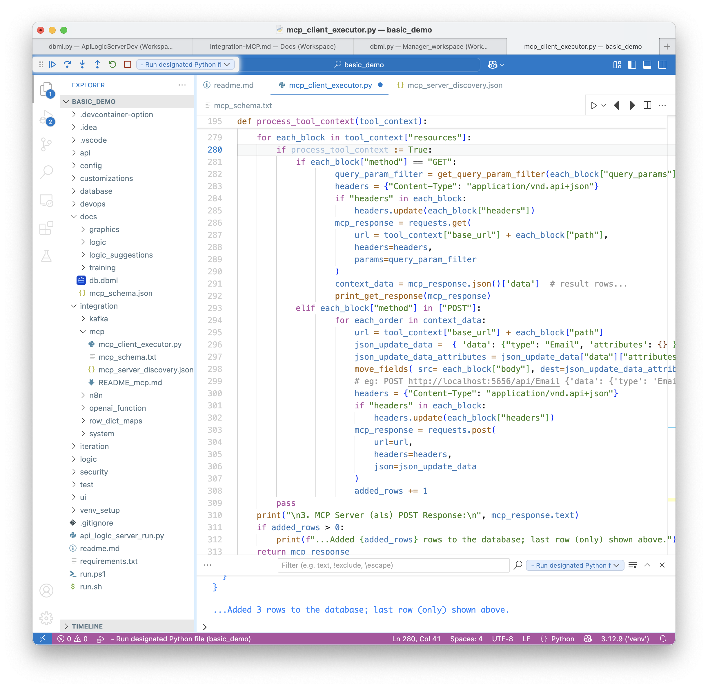
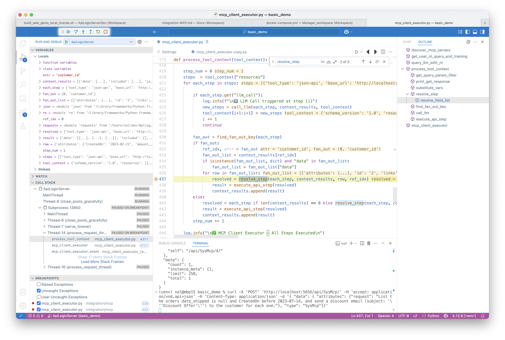
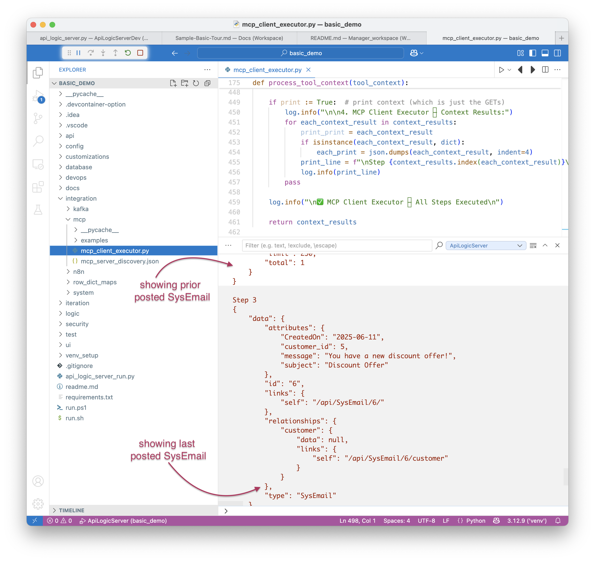
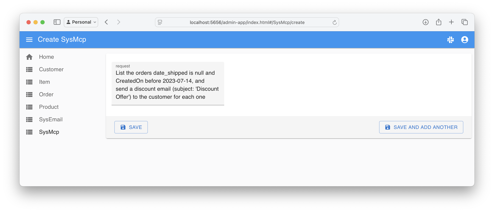
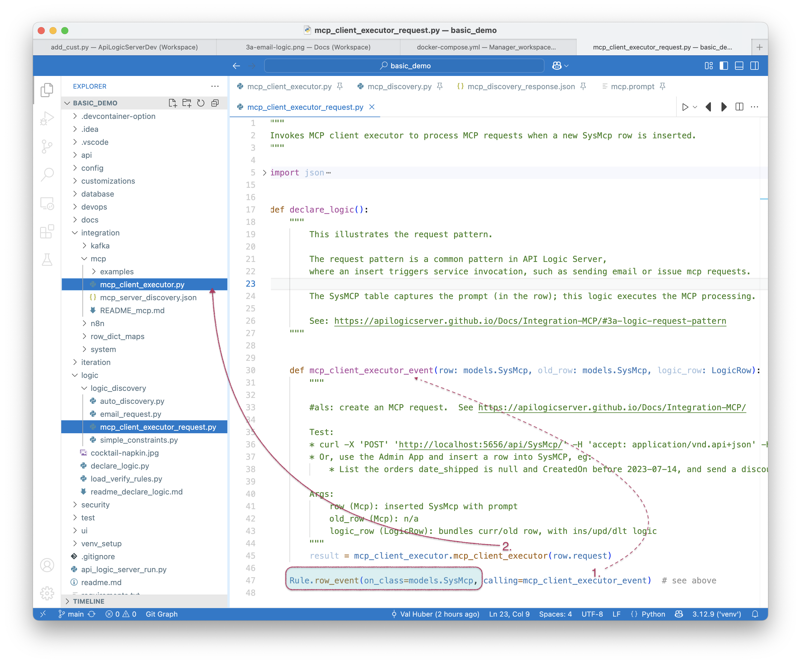

MCP Integration
 TL;DR - MCP: Enable Bus Users to use NL to create multi-step execution flows
TL;DR - MCP: Enable Bus Users to use NL to create multi-step execution flows
Developers can use MCP to build MCP Client Executors. These enable Business Users to use Natural Language to create multi-step execution flows across existing business-rule-enforced APIs. For example, a Business User might request:
Find the overdue orders, and send an email offering a discount.
This is a new request, composed from existing services (find orders, send email).
MCP Client Executors use LLMs for Natural Language translation over a wide set of underlying MCP Server Executors (aka tools). MCP enables LLMs to understand these underlying tools - their schema (e.g., Customer, Product), and how they are called (e.g, JSON:API).
MCP Client Executors operate as shown below:
- MCP Client Executors first discover servers (tools) - their schema, instructions, etc.
- MCP Client Executors then call LLMs to translate NL queries into multi-step execution flows called Tool Context Blocks (basically a list of api calls expressed in json).
-
The MCP Client Executors then process the Tool Context Block steps, making calls on the MCP Server Executors (tools).
- MCP Server Executors are commonly provided via logic-enabled APIs. (Note the logic is critical in maintaining integrity and security.)
In some cases, you may have a database, but neither the APIs nor the logic. GenAI-Logic can mcp-ify existing databases by:
- Creating JSON:APIs for existing databases with a single CLI command.
- Creating a MCP Client Executor User Interface, for Business Users to make MCP requests.
- Enabling you to declare business logic, enforced by the APIs during MCP execution flows.
Architecture

-
MCP Client Executor Startup calls
.well-knownendpoint to load training and schema meta data for each configured server -
MCP Client Executor sends Bus User NL query + training + schema to the external LLM (here we are using ChatGPT - requires API Key). LLM returns an MCP Tool Context JSON block.
-
An MCP Client Executor might be similar in concept to installed/Web ChatGPT (etc), but those cannot be used to access MCPs since they cannot issue http calls. This is a custom client app (or, perhaps an IDE tool)
-
To explore
integration/mcp/mcp_client_executor.py, click here -
Tool definitions are OpenAI specific, so we are sending the schema (in each prompt)
- Note this strongly suggests this is a subset of your database - edit
docs/mcp_schema.jsonas required.
- Note this strongly suggests this is a subset of your database - edit
-
-
MCP Client Executor iterates through the Tool Context, calling the JSON:API Endpoint that enforces business logic.
Example: pending order emails
The basic_demo sample enables you to create orders with business logic: check credit by using rules to roll-up item amount to orders / customers. Setting the date_shipped indicates payment is received, and the customer balance is reduced.
💡 The basic_demo project (tutorial here) illustrates basic GenAI-Logic operation: creating projects from new or existing databases, adding logic and security, and customizing your project using your IDE and Python.
In this example, we want a new service to:
- Find Orders placed over 30 days ago that are not shipped
- Send an Email encouraging prompt payment
We want to do this without troubling IT. MCP enables business users to implement new composite services, while maintaining integrity through the existing logic-enabled JSON:APIs.
Setup
Create the basic_demo under the Manager as described in the Manager readme:
- In your IDE:
als create --project-name=basic_demo --db-url=basic_demo

- Run
als add-custto load mcp (and logic) -
Optionally, define an environment variable:
APILOGICSERVER_CHATGPT_APIKEYChatGPT API Key (obtain one like this).- To make the demo less fiddly, the system loads the tool context from
integration/mcp/examples/mcp_tool_context.json. You can engage the LLM by settingcreate_tool_context_from_llmtoTrue, which requires an API Key.
- To make the demo less fiddly, the system loads the tool context from
-
Start the Server (F5)
- Use Run Config: MCP - Model Context Protocol - Client Executor
Prompt
Here is a NL prompt using basic_demo coded into mcp_client_executor
List the orders date_shipped is null and CreatedOn before 2023-07-14, and send a discount email (subject: 'Discount Offer') to the customer for each one.
Sample Flow
You can run mcp_client_executor under the debugger, and stop at each of the breakpoints noted in the screenshot below.
0 - MCP Client Executor
Here is the basic driver of the mcp_client_executor (see the Architecture diagram above):

1 - Discover Servers
Discovery uses a config file integration/mcp/mcp_server_discovery.json to discover 1 or more servers, and invoke their .well-known endpoint (see api/api_discovery/mcp_discovery.py):

Observe response shown above (for actual content, click here):
-
The config file is used to discover the servers.
- It identifies the
.well-knownendpoint used to discover server information. For GenAI-Logic, it iscurl -X GET "http://localhost:5656/.well-known/mcp.json".
- It identifies the
-
The server information (see above) includes:
base_urllearning: how to call the serverresources: the exposed endpoints, their attributes and methods
The resource and learning meta data is created by API Logic Server, but you can control it:
-
The learning is at docs/mcp_learning/mcp.prompt. This is also created by API Logic Server; edit as required to tune / expand training.
- For example, the learning describes how to use the request pattern to send email (further described below)
-
The resources (aka schema) is at at docs/mcp_learning/mcp_schema.json.
- You can edit this as required to control what is discovered, and to minimize the information sent to the LLM.
2 - Tool Context from LLM
We call the LLM, providing the NL Query and the discovery returned above. The LLM returns the tool context (to see it, click here) - the set of APIs the MCP Client Executor is to call:

3 - Invoke MCP Server
The calls include GET, and a POST for each returned row.

3a - Fan-out
Fan-out means that we need to create email for each returned Order. So, in processing step 2, we must iterate over the orders in step 1, and use the customer_id from the Order for the email:

3b - Logic (Request Pattern)
MCP is capable of executing email directly, but we have business policies providing for email opt-outs. We must respect this logic.
As shown below, a common logic pattern is a Request Object, which implements the request pattern:
Request Pattern: you insert a row, triggering its business logic (a Python event handler)
Here, the logic (an after_flush event) checks the opt-out, and sends the mail (stubbed):

4 - Context Results
The MCP Client Executor returns and prints the context_results. These are accrued for each execution step, above. In this example, it shows the GET, and 4 POST commands (last shown below). This context would also be passed back to the LLM for Agentic Execution, as shown in the next section.

Advanced LLM Concepts
The following are implemented but not used in this example or tested. We encourage participation in designing examples, and testing the implementation.
Agentic Execution (llm-call)
As described in this recommended video, the MCP Client Executor can call the LLM between each MCP Server Executor call. This enables the LLM to detect intermediate results, and call subsequent tools accordingly.
For example, consider this scenario:
“Get all orders for Alice. If any are over $500, alert the sales manager.”
Here is a sample tool context - note the llm-call/llm-goal:
[
{
"tool_type": "json-api",
"base_url": "https://server-a.com/api",
"path": "Order",
"method": "GET",
"query_params": [
{ "name": "customer", "op": "eq", "val": "Alice" }
],
"body": [],
"llm_call": true, // <-- Indicates to pause and invoke LLM after this step
"llm_goal": "Check which orders for Alice are over $500 and generate alert POSTs as needed"
}
]
Branching
An alternative approach would be for the LLM plan to include llm-call and branching. Consider this scenario:
“Check Alice’s orders. If any are overdue (i.e. date_due < today and not shipped), send a warning email. Otherwise, do nothing.”
The LLM might create a tool context like:
[
{
"tool_type": "json-api",
"base_url": "https://server-a.com/api",
"path": "Order",
"method": "GET",
"query_params": [
{ "name": "customer_id", "op": "eq", "val": "Alice" }
],
"body": [],
"llm_call": true,
"llm_goal": "If any orders are overdue (date_due < today and date_shipped is null), generate an email alert step. Otherwise, no further action."
}
]
MCP Logic and Security
Business logic is always critical, particularly when Business Users can make update calls. A key design goal of the MCP architecture is that updates be made via APIs that enforce logic and security.
GenAI-Logic address this as follows:
-
All domain object updates automatically invoke your declarative business logic.
-
The discussion above noted the use of the request pattern to add business logic to a service, such as email.
-
MCP also respects your security settings. For MCP calls made via SysMcp (see next section), API calls are made with the current request header from your login. In particular, role-based row-access grants are enforced using this auth-token.
For example, you could use the SysMcp in the Admin app (see next section), and enter this request:
Inspect the console log, and observe that 2 rows are returned.
MCP Client Executor UI
Invoking the MCP Client Executor via CLI is useful for development, but business users will want a User Interface. We show here how to use the Automatic Admin App to invoke the same MCP Client Executor code described above. You can of course use any technology you wish.
The screen shot below illustrates using the Admin App to create and execute MCP requests:

To install the MCP Client Executor User Interface:
- Execute the following command.
- It performs the steps in the subsections below.
Creates sqlite table: SysMCP
We create a separate table because you may wish to use MCP on an existing database that is not alterable.
You can change the definition of this table to fit your needs. It requires a column called prompt.
Adds SysMcp Logic
The screen shot below shows logic created for the SysMcp table.
- This is the same request pattern used for SysEmail.
- The code invokes the same
integration/mcp/mcp_client_executor.pydescribed above.

Customizes the Admin App
The system adds the UI in ui/admin/admin.yaml. For more information, click here.
Appendix: Status
MCP support is GA for the MCP Server Executor. The MCP Client Executor is in Tech Preview. It is a great way to explore key MCP architecture.
We welcome participation in this project. Please contact us via discord. For example, explore Agentic Execution.
Appendix: MCP Background
Descriptions of MCP often describe them as USB for servers. That meant little to use, and probably to you. We hope the more concrete description here might be more useful.
Along the same lines, the best video we have found was noted above.
Other resources:
-
and this N8N link
-
and this python sdk
-
and this video
Appendix: Key Clarifications
MCP is a new technology. In my learning curve, I found much of the information a little bit vague and in some cases, misleading. The sections below identify key clarifications to incorrect assumptions I had made, so I have listed them below in hopes they can help you.
App-Specific Client Executor
Several articles described the Client Executor as a "host such as Claude". That lead me to believe that common chat apps could call MCPs.
Later, I discovered that most chat apps cannot call http, and so cannot directly call MCPs. The Client Executor is analogous to a chat, but is written specifically for MCP use.
Client Executor (not LLM) calls the MCP
I saw several diagrams with arrows from the LLM to the MCP. That lead me to believe that the LLM calls the MCP.
Later, I realized that the LLM is just preparing the Tool Context. The Client Executor uses this to invoke the MCP. I now think of the arrow as "knows how to include it in the Tool Context".
Server Executor == logic-enabled APIs
Finally, I presumed that the Client Executor would pass the Tool Context to the LLM. This was simply a bad guess.
The key idea is that one specific Server Executor would not be aware it is part of an orchestration. In the case of database APIs, the Server Executor is the set of logic-enabled endpoints identified in the discovery schema.
Note the logic here is critical. The Client Executor can not / should not "reach in" and be aware of logic specific to each involved database.